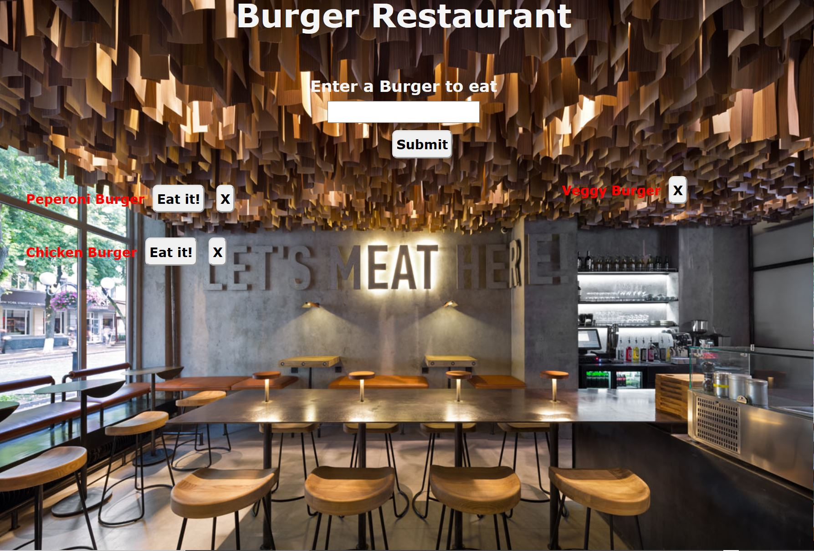

This app is use for ordering different types of Burger in a restaurant. User will enter the kind of burger they want to oredr, and once they devour it it will remove it out of the oerder list.
Github Repository Link | | https://github.com/LMTrain/eat-da-burger
Deployed Link | | https://lmburger.herokuapp.com/
